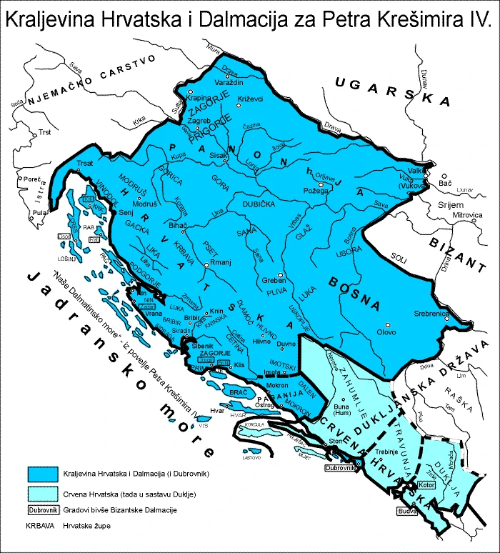

kralj Dmitar Zvonimir

O kralju
Stolovao je u Kninu i naslijedio je Petra Krešimira IV. nakon što je umro u sukobu s Normanima., jer nije imao potomaka.
1076. godine u ime pape Grgura VII., znakove kraljeske vlasti mu je uručio poslanik Gebzion u solinskoj crkvi sv. Petra i Mojsija. Također Dmitar Zvonimir je obećao Svetoj Stolici, da će pomagati vjersku obnovu, braniti Crkvu, papi davati godišnji dar u novcu, paziti da se Crkvi daju prvine i desetine, da će sprječavati prodaju ljudi, štititi siromahe, udovice i siročad.
Sazvao je sabor 1089. godine u lokalitetu Pet crkava u Kninu na kojem je hrvatskim plemićima pročitao pismo od pape u kojemu ga on traži da pošalje vojsku da oslobod Kristov grob. Prema legendi nakon toga ubili su ga ti plemići, a prije smrti je stavio 1000 godišnju kletvu na hrvatski narod u kojoj kaže da hrvatska neće imati svojeg vladara nego će bit pod tuđom vlasti.
Za vrijeme kralja Petara Krešimira IV.
Promjene u teritoriju
Nema puno promjena u teritoriju pošto za vrijeme njegova vladanja nije bilo većih ratovanja, ali je zato ojačao razvitak gospodarstva i kulture.